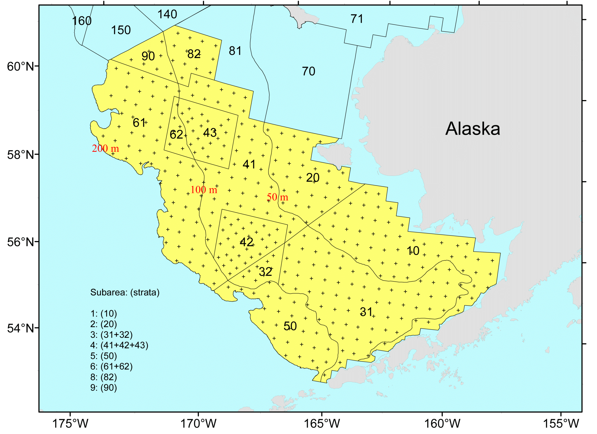
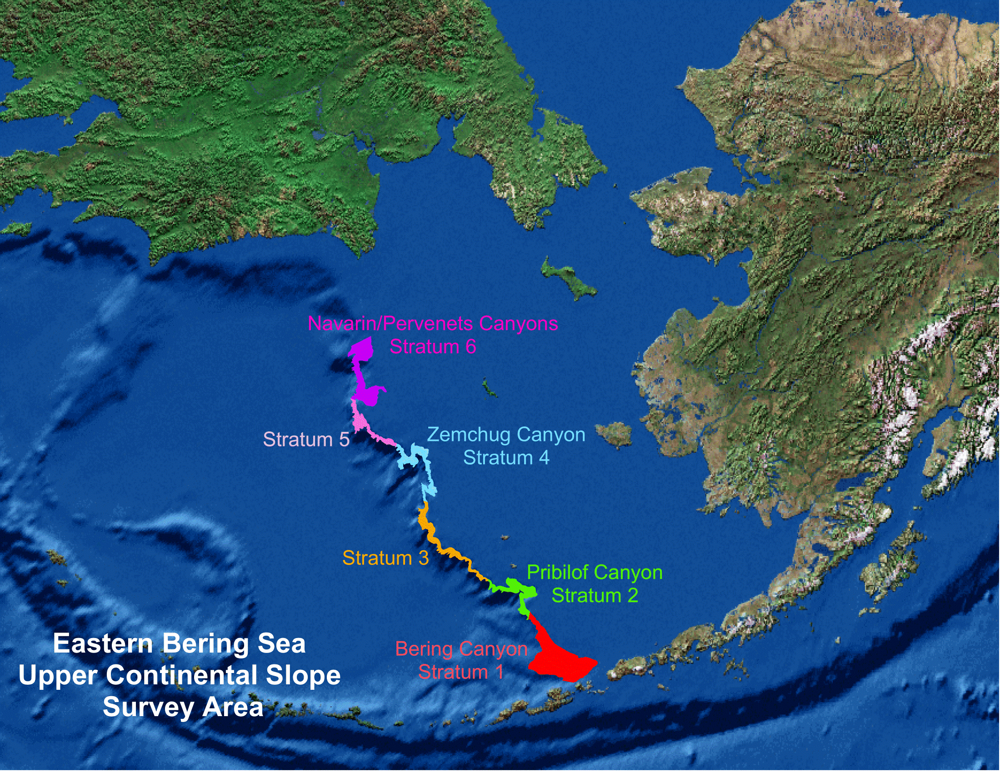

Survey | Survey Definition ID | Years | Depth (m) | Area (km2) | # Statistical Areas | # Possible Stations |
|---|---|---|---|---|---|---|
Aleutian Islands Bottom Trawl Survey | 52 | 2022 - 1980 (16) | 1 - 500 | 64,415.0 | 80 | 1,312 |
Eastern Bering Sea Slope Bottom Trawl Survey | 78 | 2016 - 2002 (6) | 201 - 800 | 21,134.2 | 4 | |
Eastern Bering Sea Crab/Groundfish Bottom Trawl Survey | 98 | 2023 - 1982 (41) | 1 - 200 | 492,989.9 | 29 | 515 |
Gulf of Alaska Bottom Trawl Survey | 47 | 2023 - 1984 (18) | 1 - 1,000 | 314,087.4 | 39 | 6,939 |
Northern Bering Sea Crab/Groundfish Survey - Eastern Bering Sea Shelf Survey Extension | 143 | 2023 - 2010 (6) | 1 - 100 | 198,866.8 | 4 | 144 |
Survey background
What is the research objective?
The objectives of these surveys are to:
- monitor trends in the marine ecosystem of the Bering Sea, Aleutian Islands, and Gulf of Alaska
- produce fishery-independent biomass and abundance estimates for commercially important fish and crab species
- collect biological and environmental data for use in ecosystem-based fishery management.
Learn more about the program
Who is conducting the research?
Scientists from the Alaska Fisheries Science Center conduct these bottom trawl surveys with participation from the Alaska Department of Fish & Game (ADF&G), the International Pacific Halibut Commission (IPHC), and universities. This research is conducted on chartered fishing vessels.
Bottom trawl surveys and regions

Each survey conducted by the Groundfish Assessment Program are multispecies bottom trawl surveys. We collect environmental and biological data to assess how climate variability and loss of sea ice are affecting bottom-dwelling marine life on the Bering Sea shelf. We monitor trends in the distribution (location and movement patterns) and abundance of groundfish and crab species as well as oceanographic data (e.g., water temperature, depth). We collect biological information such as organism weight, length, stomachs to learn about diets, and otoliths to determine fish ages. We use this information in annual stock assessments and to assess the state of the ecosystem. This research is conducted on fishing industry contract vessels.
Aleutian Islands
- Upper Continental Slope of the Aleutian Islands from Unimak Pass to Stalemate Bank
- Triennial (1990s)/Biennial since 2000 in even years, since 1992
- Modified Index-Stratified Random of Successful Stations Survey Design
- Important commercial fish species include Atka mackerel, Pacific ocean perch, walleye pollock, Pacific cod, sablefish, and other rockfish species.
Gulf of Alaska
- Continental Shelf and Upper Slope of the Gulf of Alaska extending from the Islands of Four Mountains 2,300 km east to Dixon Entrance
- Triennial (1990s)/Biennial since 2001 in odd years, since 1991
- Stratified Random Survey Design
- Important commercial species in the Gulf of Alaska include Pacific ocean perch, walleye pollock, Pacific cod, flatfish, and other rockfish species.
Eastern Bering Sea Shelf
- The continental shelf of the eastern Bering Sea from the Aleutian Islands to the Bering Strait
- Conducted annually since 1982.
- Uses a stratified systematic sampling survey design with fixed stations at center of 20 x 20 nm grid.
- Similar in design to the northern Bering Sea shelf bottom trawl survey.
- Focus species for the Bering Sea include walleye pollock, Pacific cod, Greenland turbot, yellowfin sole, northern rock sole, red king crab, and snow and Tanner crabs.

Northern Bering Sea
- The continental shelf of the northern Bering Sea, including the area north of St. Lawrence Island and Norton Sound
- Biennial/Annual; conducted intermittently since 2010
- Uses a stratified systematic sampling survey design with fixed stations at center of 20 x 20 nm grid.
- Similar in design to the eastern Bering Sea shelf bottom trawl survey.
Eastern Bering Sea Upper Continental Slope
- The eastern Bering Sea upper continental slope survey area extends from Unalaska and Akutan Islands to the U.S.-Russian Maritime Boundary at 61° N near the International Date Line (166° E to 180° W) at depths from 200 to 1,200 m
- Conducted intermittently since 2002 (funding dependent)
- Modified Index-Stratified Random of Successful Stations Survey Design
- Focus species for the Bering Sea slope include giant grenadier, Pacific ocean perch, popeye grenadier, walleye pollock, and arrowtooth flounder.
